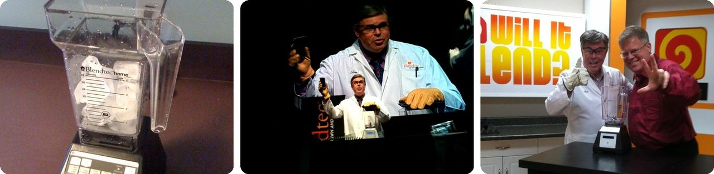

🌍 Top 10 Appareils du quotidien et leurs mésaventures bizarres
18 novembre 2026
1. 🇺🇸 Le four à micro-ondes a été découvert grâce à une barre chocolatée fondue
 En 1945, Percy Spencer, un ingénieur autodidacte de l'entreprise Raytheon, travaillait à côté d'un radar en marche. Il a remarqué que la barre chocolatée dans sa poche avait fondu.
En 1945, Percy Spencer, un ingénieur autodidacte de l'entreprise Raytheon, travaillait à côté d'un radar en marche. Il a remarqué que la barre chocolatée dans sa poche avait fondu.
Il a voulu comprendre pourquoi, alors il a dirigé exprès des micro-ondes sur de la nourriture. La première chose qu'il a cuite, c'était du pop-corn. La deuxième, un œuf, qui a explosé au visage d'une des personnes qui faisaient l'essai.
Le premier micro-ondes vendu, le Radarange de 1947, mesurait environ 1,8 m (5 pieds 11 pouces) de haut et pesait 340 kg (750 livres), à peu près autant qu'un piano à queue. Raytheon continuait de l'améliorer, donc au début il était loué aux hôtels et aux restaurants pour 5 dollars par jour au lieu d'être vendu.
C'est un appareil de cuisine qui est né d'un goûter gâché.
2. 🇦🇺 Un micro-ondes a fait croire à des astronomes qu'ils captaient des « signaux de l'espace »
 À l'observatoire de Parkes, en Australie, un radiotélescope géant captait sans arrêt de courtes impulsions qui ressemblaient beaucoup à des sursauts radio rapides, de mystérieux éclairs venus de l'espace lointain. Les anciennes archives en montraient 46 faux entre 1998 et 2015.
À l'observatoire de Parkes, en Australie, un radiotélescope géant captait sans arrêt de courtes impulsions qui ressemblaient beaucoup à des sursauts radio rapides, de mystérieux éclairs venus de l'espace lointain. Les anciennes archives en montraient 46 faux entre 1998 et 2015.
Les astronomes les ont surnommés « pérytons », d'après un cerf ailé imaginaire qui projette l'ombre d'un homme, parce qu'ils semblaient fabriqués par des humains. En 2015, ils ont enfin trouvé le coupable : quelqu'un à l'observatoire qui ouvrait la porte d'un micro-ondes avant la fin du minuteur.
Quand on ouvre la porte trop tôt, le micro-ondes lâche un petit « bip » radio en s'éteignant. Les deux micro-ondes en cause avaient plus de 27 ans, et ils fabriquaient un faux signal environ une fois sur deux quand on ouvrait la porte trop tôt.
En gros, le mystère de l'espace, c'était quelqu'un de pressé de manger.
3. 🏴 La première webcam du monde filmait une cafetière
 En 1991, au laboratoire d'informatique de l'université de Cambridge, les chercheurs en avaient assez de marcher jusqu'à la Trojan Room pour trouver la cafetière vide. Alors deux d'entre eux ont pointé une caméra dessus et envoyé l'image sur l'ordinateur de tout le monde.
En 1991, au laboratoire d'informatique de l'université de Cambridge, les chercheurs en avaient assez de marcher jusqu'à la Trojan Room pour trouver la cafetière vide. Alors deux d'entre eux ont pointé une caméra dessus et envoyé l'image sur l'ordinateur de tout le monde.
L'image était minuscule, seulement 128 sur 128 points gris, plus petite qu'un timbre sur un écran d'aujourd'hui. En 1993, elle a été mise sur le Web, et des gens du monde entier se sont mis à surveiller une cafetière en Angleterre.
La caméra a été éteinte en 2001, et des journaux comme le Washington Post en ont parlé. Une des machines à café s'est ensuite vendue 3 350 livres sur eBay.
Autrement dit, la grande mission de la première webcam, c'était d'éviter aux gens un trajet pour rien.
4. 🇬🇧 Les pubs à la télé britannique affolent le réseau électrique à cause des bouilloires
 Au Royaume-Uni, quand une émission populaire passe à la pub, des millions de gens se lèvent en même temps pour allumer la bouilloire et se faire un thé. On appelle ça le TV pickup, et les bouilloires britanniques sont puissantes : chacune consomme de 2,5 à 3 kilowatts.
Au Royaume-Uni, quand une émission populaire passe à la pub, des millions de gens se lèvent en même temps pour allumer la bouilloire et se faire un thé. On appelle ça le TV pickup, et les bouilloires britanniques sont puissantes : chacune consomme de 2,5 à 3 kilowatts.
Un pic habituel ajoute d'un coup 200 à 400 mégawatts de demande. Le plus grand de l'histoire a eu lieu le 4 juillet 1990, juste après la défaite de l'Angleterre contre l'Allemagne de l'Ouest aux tirs au but, en Coupe du monde : 2 800 mégawatts.
Le réseau s'y prépare à l'avance. Dinorwig, une centrale du pays de Galles qui stocke l'énergie sous forme d'eau dans un lac en haut d'une montagne, peut envoyer 1 320 mégawatts en seulement 12 secondes en laissant cette eau dévaler la pente.
Vois ça comme un pays entier qui tire la chasse d'eau en même temps, mais avec du thé.
5. 🇬🇧 L'inventeur de l'aspirateur a été arrêté pour avoir aspiré de l'argent
 En 1901, l'ingénieur anglais Hubert Cecil Booth a vu une machine qui soufflait la poussière des chaises et s'est dit : pourquoi ne pas l'aspirer plutôt ? Il a testé l'idée en posant un mouchoir sur une chaise de restaurant et en aspirant la poussière à travers avec sa bouche.
En 1901, l'ingénieur anglais Hubert Cecil Booth a vu une machine qui soufflait la poussière des chaises et s'est dit : pourquoi ne pas l'aspirer plutôt ? Il a testé l'idée en posant un mouchoir sur une chaise de restaurant et en aspirant la poussière à travers avec sa bouche.
Sa machine, surnommée « Puffing Billy », était si grosse qu'elle roulait sur une charrette tirée par des chevaux. Les ouvriers la garaient devant un bâtiment et passaient de longs tuyaux par les fenêtres pour nettoyer l'intérieur.
Ça a causé quelques ennuis. Booth recevait des plaintes à cause du bruit et a même eu une amende pour avoir effrayé des chevaux. Après avoir nettoyé la Royal Mint, où l'on fabrique les pièces de monnaie, il a été arrêté en sortant, parce qu'il avait oublié de vider une machine pleine de poussière d'argent. Il a vite été relâché.
En gros, c'était un vol par accident, à l'aspirateur.
6. 🇺🇸 Le lave-vaisselle a été inventé parce que de la belle vaisselle s'ébréchait
 Josephine Cochrane faisait partie de la haute société de Chicago, et après un de ses dîners, quelques assiettes de famille se sont ébréchées pendant la vaisselle. Elle s'est dit qu'une machine ferait mieux.
Josephine Cochrane faisait partie de la haute société de Chicago, et après un de ses dîners, quelques assiettes de famille se sont ébréchées pendant la vaisselle. Elle s'est dit qu'une machine ferait mieux.
Elle a mesuré sa vaisselle et fabriqué des paniers en fil de fer pile à la taille des assiettes, des tasses et des soucoupes. Les paniers étaient posés sur une roue dans une cuve en cuivre → un moteur faisait tourner la roue → de l'eau chaude savonneuse jaillissait du fond et retombait en pluie sur la vaisselle. C'était le premier lave-vaisselle qui lavait grâce à la pression de l'eau plutôt qu'avec des brosses.
Elle a obtenu son brevet le 28 décembre 1886. À l'Exposition universelle de Chicago en 1893, neuf de ses machines lavaient la vaisselle dans les restaurants, et son entreprise est plus tard devenue une partie de KitchenAid.
C'est toute une nouvelle machine, juste pour sauver quelques assiettes.
7. 🇩🇪 Albert Einstein a inventé un frigo
 Dans les années 1920, des journaux berlinois ont raconté qu'une famille était morte quand un joint de son réfrigérateur avait lâché et que du gaz toxique s'était répandu dans la maison. Albert Einstein et son ancien élève Leó Szilárd ont décidé de régler ça.
Dans les années 1920, des journaux berlinois ont raconté qu'une famille était morte quand un joint de son réfrigérateur avait lâché et que du gaz toxique s'était répandu dans la maison. Albert Einstein et son ancien élève Leó Szilárd ont décidé de régler ça.
Leur idée : un frigo sans pièces mobiles, pour qu'il n'y ait aucun joint à user. Il fonctionnait juste avec une source de chaleur et trois liquides : de l'eau, de l'ammoniac et du butane. Entre 1926 et 1934, ils ont obtenu 45 brevets dans six pays.
Mais il consommait plus que les autres frigos, et des gaz réfrigérants plus sûrs sont arrivés. Les deux n'ont gagné que 750 dollars pour les brevets qu'ils ont vendus, environ 10 000 dollars d'aujourd'hui.
Autrement dit, l'un des plus grands scientifiques de l'histoire a aussi essayé de réparer le frigo de la cuisine.
8. 🇺🇸 Une marque de blenders est devenue célèbre en mixant des téléphones

Tom Dickson, le fondateur de l'entreprise de blenders Blendtec, a un jour mixé une boîte d'allumettes pour voir. Ça a donné une série de vidéos où il commençait chaque épisode par « Will it blend? That is the question. » (« Est-ce que ça se mixe ? Telle est la question. »)Il a mixé un iPad, un iPhone 4 et un « cochicken » : un demi-poulet cuit avec une canette de Coca-Cola, os compris (à ne pas manger).
En 2007, il a mixé un caméscope. Ensuite, l'équipe vidéo a essayé de rapporter ce qui en restait au magasin d'électronique Best Buy. Ça n'a pas marché.
C'est une émission de cuisine où la recette, c'est ton téléphone.
9. 🍞 Les grille-pain sont allés sur Internet avant la plupart des gens
 En 1990, les informaticiens John Romkey et Simon Hackett ont connecté un grille-pain à Internet : c'était le premier appareil qu'on pouvait contrôler en ligne. La plupart des maisons n'avaient pas encore Internet.
En 1990, les informaticiens John Romkey et Simon Hackett ont connecté un grille-pain à Internet : c'était le premier appareil qu'on pouvait contrôler en ligne. La plupart des maisons n'avaient pas encore Internet.
Les idées de grille-pain sont devenues encore plus folles. En 2001, un designer de l'université Brunel, en Angleterre, a fabriqué un grille-pain qui appelait un service météo et grillait la prévision, soleil ou nuages, sur ta tartine.
Plus tard, un grille-pain qui utilisait Twitter est devenu un des premiers exemples de « l'Internet des objets », l'idée que les objets du quotidien discutent avec Internet.
Vois ça comme un petit-déjeuner qui consulte ses mails.
10. 🇬🇧 Le nom d'un réveil qui fait le thé a été refusé à cause d'une rivière
 Un teasmade, c'est un réveil de chevet qui prépare aussi le thé, pour qu'une tasse chaude t'attende dès le réveil. En 1902, un armurier de Birmingham, Frank Clarke, en a breveté un et l'a vendu comme « Une horloge qui fait le thé ! ».
Un teasmade, c'est un réveil de chevet qui prépare aussi le thé, pour qu'une tasse chaude t'attende dès le réveil. En 1902, un armurier de Birmingham, Frank Clarke, en a breveté un et l'a vendu comme « Une horloge qui fait le thé ! ».
En 1932, George Absolom en a inventé un électrique et a voulu déposer le nom « Teesmade ». L'office des brevets a refusé, parce qu'il n'était pas fabriqué au bord de la rivière Tees, et que le nom risquait de tromper les gens.
Plus tard, le Goblin Teasmade, vendu par la même entreprise que celle née de l'affaire d'aspirateurs de Booth, a cartonné. Les teasmades ont eu leur heure de gloire dans les années 1960 et 1970, et l'un d'eux réveille même Brian May dans le clip « I Want to Break Free » de Queen.
C'est un réveil qui te soudoie avec du thé pour te sortir du lit.
Le saviez-vous ?
La cafetière de la Trojan Room a inspiré une blague qui se cache encore aujourd'hui dans Internet. Le 1er avril 1998, un organisme très sérieux qui fixe les règles d'Internet a publié des règles pour contrôler des cafetières en ligne, avec un code d'erreur 418 : « Je suis une théière ». Quand des responsables ont voulu le retirer de logiciels très utilisés en 2017, un ado de 15 ans a lancé la campagne « Save 418 » et a gagné. De quoi se demander quels autres poissons d'avril ont fini par devenir réels.
Crédits photo (Wikimedia Commons)
- #1: Raytheon RadaRange NS Savannah MD1.jpg by Acroterion, CC BY-SA 4.0
- #1: Amana Radarange Microwave Oven.jpg by TaurusEmerald, CC BY-SA 4.0
- #1: Tappan Model RL-1 Microwave Oven (smithsonian_american_history_museum) by Raytheon Manufacturing Co. and Tappan, CC0
- #2: CSIRO Parkes Radio Telescope (flickr) by amandabhslater, CC BY-SA 2.0
- #2: CSIRO ScienceImage 4350 CSIROs Parkes Radio Telescope with moon in the background.jpg by division, CSIRO, CC BY 3.0
- #2: CSIRO Parkes Radio Telescope (flickr) by amandabhslater, CC BY-SA 2.0
- #3: Trojan Room Coffee Pot (x1.jpg).jpg by Daniel Gordon, Martyn Johnson and Quentin Stafford-Fraser, CC BY-SA 3.0
- #3: Trojan Room coffee pot xcoffee.png by Quentin Stafford-Fraser, CC BY-SA 3.0
- #3: Trojan Room coffee pot xvcoffee.jpeg by Daniel Gordon, Martyn Johnson and Quentin Stafford-Fraser, CC BY-SA 3.0
- #4: Electric kettle phillips white.JPG by Rafa, Public domain
- #4: Dinorwig pumped hydro Power Station at Slate Quarry near Llanberis (flickr) by John Englart (Takver), CC BY-SA 2.0
- #4: General electric - electric water kettle.jpg by Cantons-de-l'Est, CC BY-SA 4.0
- #5: Hubert Cecil Booth Straßenstaubsauger von 1901.jpg by Unknown authorUnknown author, Public domain
- #5: Booth's vacuum cleaner, Science Museum, London.jpg by Matt Brown, CC BY 2.0
- #5: Antique vacuum cleaner and woodstove (flickr) by quinet, CC BY 2.0
- #6: Stamps of Romania, 2013-34.jpg by Post of Romania, Public domain
- #6: Dishwasher demonstration 1921.jpg by Unknown authorUnknown author, Public domain
- #6: Lincoln buff set - 1864.jpg by Detweiler, Susan G. (1975). American Presidential China. Washington, D.C.: Smithsonian Institution, p. 46., Public domain
- #7: Einstein Refrigerator pat1781541 clarified.jpg by Einstein/Szilard with annotations by P. Brandon Malloy, Public domain
- #7: Albert Einstein 1921 (cropped).jpg by Harris & Ewing Studio, active 1905 - 1977, CC0
- #7: Leo Szilard.jpg by U.S. Department of Energy, Public domain
- #8: Blendtec Total Blender.jpg by Trebz, CC BY 2.0
- #8: Tom Dickson.jpg by Andrew Baron from NYC, United States, CC BY 2.0
- #8: Will Scoble Blend? No! (flickr) by Robert Scoble, CC BY 2.0
- #9: The Internet Toaster (flickr) by public.resource.org, CC0
- #9: Internet Toaster (flickr) by public.resource.org, CC BY 2.0
- #9: 20200721-FlickrFriday Polished Vintage Toaster (flickr) by C E Andersen, CC BY 2.0
- #10: Early Teasmade - Science Museum London (flickr) by Haydn Blackey, CC BY-SA 2.0
- #10: GoblinTeasmade.jpg by MortimerCat, CC BY-SA 3.0
- #10: Teasmade (flickr) by Simon Harriyott, CC BY 2.0


.jpg){kind=link}


.jpg){kind=link}